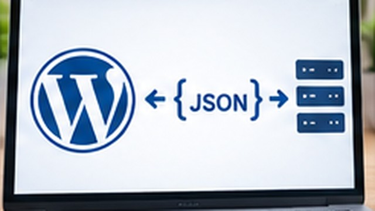

WordPress
ChatGPTで作った記事をWordPressへ自動投稿する方法｜OpenAI APIとREST APIを使う流れ
ChatGPTで作った記事をWordPressへ自動投稿する仕組みを、OpenAI APIでの生成とWordPress REST APIでの投稿に分けて解説します。

ChatGPTで作った記事をWordPressへ自動投稿する仕組みを、OpenAI APIでの生成とWordPress REST APIでの投稿に分けて解説します。
WordPress REST APIが使えない、JSONを取得できないときに確認したいURL、HTTPエラー、パーマリンク、プラグイン、認証などのポイントを解説します。
WordPress REST APIの記事データとGoogleスプレッドシートなどの記事管理表を照合する方法を、照合キーと不一致の見つけ方から解説します。
WordPress REST APIで公開記事の件数や投稿データを確認する方法を、レスポンスヘッダーとページ分割の考え方を含めて解説します。
WordPress REST APIで投稿IDやslugを使って特定の記事を取得し、タイトルやURLなどを確認する方法を解説します。
WordPress REST APIで公開記事の一覧を取得する基本手順を、URL、JSONの見方、件数指定まで初心者向けに解説します。
WordPress REST APIとは何か、できること、基本的なURL、JSON、認証、使い始めるときの確認方法を初心者向けに解説します。

WordPressの更新後に表示崩れやエラーが起きたときに、更新対象を特定し、キャッシュ、プラグイン、テーマ、バックアップから復旧する考え方を解説します。
WordPressが真っ白になったときに、直前の更新、プラグイン、テーマ、PHPエラー、サーバーログなどから原因を切り分ける方法を解説します。
WordPressの「データベース接続確立エラー」が出る主な原因と、サーバー障害・接続情報・データベース状態を確認する順番を解説します。
WordPressにログインできないときに、入力情報、パスワード再設定、ログインURL、Cookie、プラグインなどを順番に確認する方法を解説します。
WordPressで起きやすいログイン不可、データベース接続エラー、真っ白な画面、404、更新後の不具合について、原因を切り分ける順番をまとめます。

WordPressサイトをHTTPS化するためのSSL設定について、サーバー側とWordPress側に分けて基本手順を解説します。

WordPressの固定ページと投稿の違いを、時系列・カテゴリ・階層・用途の観点から比較し、どちらを使うか判断できるように解説します。
WordPressのブロックエディターで文字や画像にリンクを設定する方法と、内部リンク・外部リンクの違い、公開前の確認ポイントを解説します。
WordPressのブロックエディターで画像を挿入する方法を、アップロード・メディアライブラリの選択から代替テキストやサイズ確認まで解説します。
WordPressで新しい記事を作成し、タイトル・本文・カテゴリなどを設定して、プレビュー確認後に公開するまでの基本手順を解説します。
WordPressを初めて使う人向けに、記事投稿・画像挿入・リンク・カテゴリ・固定ページの基本操作と、公開前に確認したいポイントをまとめます。

WordPressに必要なレンタルサーバーとは？選び方を解説について、初心者向けに具体的な手順・例・注意点を交えて解説します。

WordPressと無料ブログの違いは？メリット・デメリットを比較について、初心者向けに具体的な手順・例・注意点を交えて解説します。
WordPressでどんなサイトが作れる？初心者向けに解説について、初心者向けに具体的な手順・例・注意点を交えて解説します。
WordPress.comとWordPress.orgの違いを解説について、初心者向けに具体的な手順・例・注意点を交えて解説します。
WordPressとは？できること・メリット・仕組みを初心者向けに解説について、初心者向けに具体的な手順・例・注意点を交えて解説します。